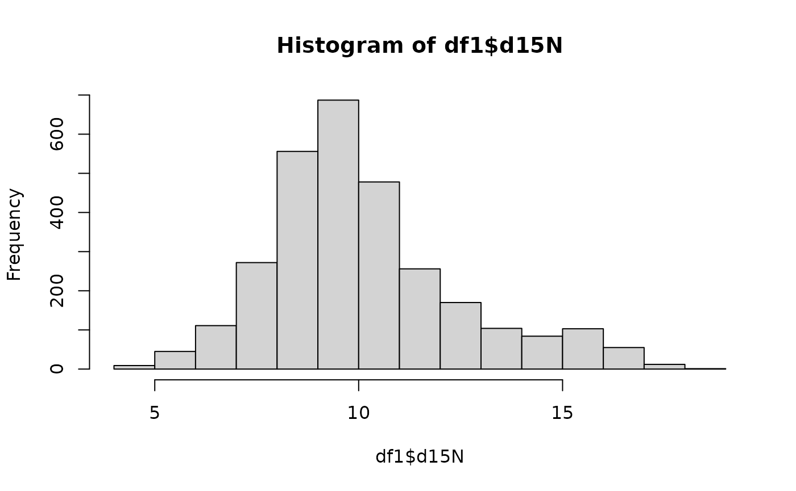

-
getRemoteDataAPI()retrieves the API to query the data -
getMappingAPI()calls the mapping for the fields needed from the user API calls -
getDatabaseList()returns a list of database names linked to the API call -
callAPI()initiates the request to call
library(IsoMemo)
getDatabaseList() # returns a character format of list of database names linked to the API call
#> [1] "14CSea" "CIMA" "IntChron" "LiVES"
df = getData(db = "IntChron", category = "Location", field = "latitude", mapping = "IsoMemo")
# see latitude and longitude of each site
summary(df)
#> latitude
#> Min. :-75.00
#> 1st Qu.: 25.74
#> Median : 33.60
#> Mean : 32.97
#> 3rd Qu.: 51.18
#> Max. : 78.57
#> NA's :45546The function below retrieves ALL data and fields from all existing databases.
# ALL_DATA = getData()
# print(nrow(ALL_DATA)) # check how many rows
# levels(ALL_DATA$source) # check all the database sources are thereLet’s explore another database: LiVES
getDatabaseList() # tells what database are currently published
#> [1] "14CSea" "CIMA" "IntChron" "LiVES"
df1 = getData('LiVES')
summary(df1)
#> source id description d13C
#> LiVES:3664 Length:3664 Length:3664 Min. :-25.00
#> Class :character Class :character 1st Qu.:-20.65
#> Mode :character Mode :character Median :-19.89
#> Mean :-19.66
#> 3rd Qu.:-19.10
#> Max. :-10.27
#> NA's :60
#> d15N latitude longitude site
#> Min. : 4.38 Min. :32.36 Min. :-10.439 Length:3664
#> 1st Qu.: 8.60 1st Qu.:40.42 1st Qu.: 7.506 Class :character
#> Median : 9.70 Median :48.57 Median : 13.847 Mode :character
#> Mean :10.14 Mean :47.22 Mean : 14.921
#> 3rd Qu.:11.20 3rd Qu.:51.87 3rd Qu.: 22.717
#> Max. :18.31 Max. :68.09 Max. : 84.050
#> NA's :721
#> dateMean dateLower dateUpper dateUncertainty
#> Min. : 686 Min. : 758 Min. : 352 Min. : -17.5
#> 1st Qu.: 3150 1st Qu.: 2559 1st Qu.: 2065 1st Qu.: 49.0
#> Median : 4495 Median : 3970 Median : 3520 Median : 80.0
#> Mean : 4970 Mean : 4761 Mean : 4224 Mean : 125.5
#> 3rd Qu.: 5421 3rd Qu.: 5360 3rd Qu.: 5000 3rd Qu.: 125.0
#> Max. :105000 Max. :130000 Max. :80000 Max. :12500.0
#> NA's :7 NA's :7 NA's :7 NA's :273
#> datingType
#> expert :2225
#> radiocarbon:1439
#>
#>
#>
#>
#> How is the distribution of the variable “d15N” isotope?
hist(df1$d15N)
Let’s see the linear relationship between variables d13C and d15N: